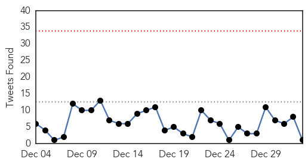
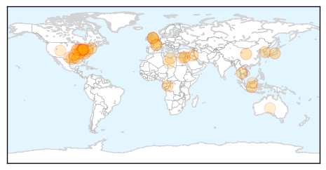

Ebola
30-Day Web Trend
0 alerts, 0 warnings

30-Day Twitter Trend
0 alerts, 0 warnings

Article Locations

Article Confidences

Top Articles:
- 1.000
- Cuban Doctor Seeks Return to Africa After Surviving Ebola
- 1.000
- 20,000 cases on, Ebola mysteries remain
- 1.000
- World Health Organization reports 7,905 Ebola deaths
- 1.000
- The most from the coast
- 1.000
- Ebola spreads in Sierra Leone as global cases top 20,000
- 1.000
- Nearly 40 years and more than 20,000 cases in, many Ebola mysteries remain
- 1.000
- Ebola exposed flaws in nation’s ability to respond to dangerous new germs
- 1.000
- Largest Ebola outbreak ever reveals truths about the mysterious, deadly disease
- 1.000
- 2014 under review - Ebola outbreak
- 1.000
- Texas Matters: The Lessons Of Ebola
- 1.000
- EDITORIAL: No shortage of health dangers
- 0.999
- Another View: The world must prepare for this year's health crisis
- 0.999
- Korean aid worker in Sierra Leone to be sent to Germany for Ebola test
- 0.999
- UN tally of Ebola-linked deaths tops 8,000
- 0.999
- Sierra Leone's Kailahun: from Ebola hotspot to zero infections
- 0.999
- Health Ministry says one of the two Ebola Treatment Centres is completed
- 0.999
- Italian doctor cured of Ebola may return to Sierra Leone
- 0.999
- Doctor declared Ebola-free in Rome
- 0.999
- Over 20,000 people contracted Ebola in 2014: WHO
- 0.999
- Doctor declared #Ebola-free in Rome
- 0.998
- Borneo , Malaysia, Sarawak Daily NewsBorneoPost Online
- 0.998
- Ebola death toll nears 8,000: WHO
- 0.998
- The UN Must Investigate Ebola Outbreak in West Africa
- 0.997
- Korean health worker being monitored for Ebola – The Korea Times
- 0.997
- Second Ebola Test Negative for Nurse Being Treated in Kelowna
- 0.997
- UK passengers on Ebola flights traced
- 0.997
- Editorial: Winning the war against Ebola
- 0.996
- Where Could Ebola Strike Next? Scientists Hunt Virus In Asia
- 0.996
- Ireland to fund Sierra Leone's ambulance, burial teams to fight Ebola
- 0.996
- Relentless spread of Ebola continues with Sierra Leone worst hit
- 0.996
- Over 160 million euros for the fight against Ebola - Sierra Leone
- 0.996
- Where Could Ebola Strike Next? Scientists Hunt Virus In Asia
- 0.996
- Italian Ebola patient released from hospital in Rome
- 0.995
- Gov't assures of quick containment of ebola in case of outbreak
- 0.995
- Ebola death toll nears 8,000 – WHO
- 0.995
- CORRECTED-Italian Ebola patient released from hospital in Rome
- 0.994
- WATCH: B.C. nurse suspected of having Ebola impressed by hospital treatment
- 0.993
- FDA To Test San Diego Company's Ebola Treatment Device
- 0.992
- Ebola tops health news, local and worldwide, in 2014
- 0.992
- Where could Ebola strike next? Scientists hunt virus in Asia
- 0.991
- Courage gets B.C. face in Ebola fighter Patrice Gordon
- 0.991
- Penn doctor going back for second tour fighting Ebola in Africa
- 0.991
- ISIS Militants Have Contracted Ebola
- 0.991
- Gulf Daily News World News Ebola fight may be won this year says UN
- 0.991
- Ebola Screenings Should Be Improved
- 0.991
- Week of prayer and fasting to help combat Ebola surge in Sierra Leone
- 0.990
- Fear Hampering Ebola Fight
- 0.990
- South Korean suspected of Ebola to be sent to Germany
- 0.990
- Local Ebola volunteers: Confronting crisis is ‘the right thing’
- 0.989
- First Ebola Victim May Have Been Infected by Bats
Showing top 50 articles...
Top Tweets:
- 0.922
- Ebola Update: 20,206 confirmed, probable & suspected cases reported in 3 most affected countries, and 7,905 deaths. EbolaResponse
- 0.792
- RT: Assessment antivirals Ebola started today WestAfrica. With public health,community engagement,diagnostics,TX,vaccines E…
- 0.759
- Malaria killing thousands more than Ebola in West Africa http://t.co/9MQumOjShT
- 0.756
- RT: Ebola Closes schools:My ebook in response to awful effects of Ebola on communities http://t.co/FbTd4Ku729…
- 0.702
- Most intense Ebola transmission in West Africa reported in western Sierra Leone says http://t.co/Lw6SKCcR79 http://t.co/jBv0QHsvH7
- 0.680
- Graphic via shows timeline and spread of Ebola across Africa http://t.co/bxSrHnyRnG
- 0.676
- Terrific MT: Compelling, infuriating Ebola ticktock from. http://t.co/7m5CCA2GbS
- 0.616
- RT: Where Could Ebola Strike Next? Scientists Virus Hunt In Asia http://t.co/E4S50jBJXq
- 0.608
- Collecting accurate data on the Ebola outbreak proves to be a challenge in affected areas via http://t.co/xrsF336HQs
- 0.563
- Scottish nurse enters "critical" phase of Ebola treatment http://t.co/iagtVAF5Ke
- 0.560
- RT: Experimental drug for British Ebola nurse who had been working in Sierra Leone http://t.co/n78vWcw7Ya http://t.co/S81ZBGlfDp
- 0.556
- RT: 837.5% more people have died from malaria than ebola in Guinea this year http://t.co/SeSYKEtXpw
- 0.548
- .@NYTimes infographic shows Ebola cases treated outside Africa. Want to see: list of experimental drugs each got. http://t.co/qCb9R4ra52
- 0.515
- Liberia had zero confirmed Ebola cases on 31 Dec & is moving to natl avg of just over 3 cases/day. EbolaResponse http://t.co/rXihLevcol
Unknown
30-Day Web Trend
0 alerts, 0 warnings

30-Day Twitter Trend
0 alerts, 0 warnings

Article Locations
Article Confidences

Top Articles:
- 0.996
- Ohio sees another spike in flu hospitalizations
- 0.993
- Flu deaths in North Carolina reach 17; doctors predict harsh season
- 0.993
- Health officials report 36 flu-related deaths in Indiana
- 0.980
- KSLA News 12 Shreveport, Louisiana News Weather & Sports
- 0.978
- Significant flu activity in Alabama
- 0.977
- Ohio flu hospitalizations 7 times higher this year than last
- 0.974
- Flu cases in Ohio are swamping hospitals, which are urging people to avoid ERs if possible
- 0.961
- The difference between the flu and a stomach bug
- 0.957
- Novant Health restricting access to hospitals, including Thomasville
- 0.957
- Pulaski County Schools proactive against spreading the flu
- 0.956
- Hospitals ask sick visitors to stay away
- 0.944
- Salem Hospital asks possible flu carriers to avoid visiting
- 0.930
- Shreveport listed as second sickest city this flu season
- 0.921
- Nationwide caramel apple warning issued
- 0.917
- Chicago Tribune
- 0.917
- Chicago Tribune
- 0.917
- Chicago Tribune
- 0.917
- Chicago Tribune
- 0.917
- Chicago Tribune
- 0.917
- Chicago Tribune
- 0.917
- Chicago Tribune
- 0.917
- Chicago Tribune
- 0.917
- Chicago Tribune
- 0.917
- Chicago Tribune
- 0.917
- Chicago Tribune
- 0.866
- Fire at oil tanks at Libya's Es Sider port extinguished -official
- 0.856
- Biloxi pharmacy offers free flu vaccines
- 0.808
- West Texas News
- 0.808
- West Texas News
- 0.785
- KFVS12 News & Weather Cape Girardeau, Carbondale, Poplar Bluff
- 0.785
- KFVS12 News & Weather Cape Girardeau, Carbondale, Poplar Bluff
- 0.757
- What you don't know about RSV could hurt your baby - Columbia Daily Tribune
- 0.729
- Grand Junction hospital limits visitors due to flu
- 0.688
- Churrascaria Aveirense Restaurant Closed After Salmonella Outbreak
- 0.626
- Dad says 6-year-old son with flu died in his arms at hospital waiting for treatment
- 0.609
- Grand Junction hospital limits visitors due to flu
- 0.604
- Recovery teams narrow AirAsia crash search area
- 0.597
- Photos: Treasure trove of rare autos found in France
- 0.597
- Palestinians submit request to join ICC
- 0.597
- Rescue teams reach migrant ship off Italian coast
- 0.597
- France 'backed Palestinians in UN Security Council to prevent ICC bid'
- 0.597
- Bad luck, not lifestyle or genes, to blame for most cancers
- 0.559
- Terry White Chemists Metformin (metformin hydrochloride) Drug
- 0.523
- Water, improved sanitation needed for preventing maternal deaths in developing nations
Top Tweets:
- 0.685
- Get your flu vaccine before you travel to reduce your risk of catching & spreading the flu. http://t.co/2MZSFxmdMj
- 0.537
- If u have flu and have diabetes, lung disease, heart disease (other than hypertension) or other chronic illness, see MD re antiviral meds.